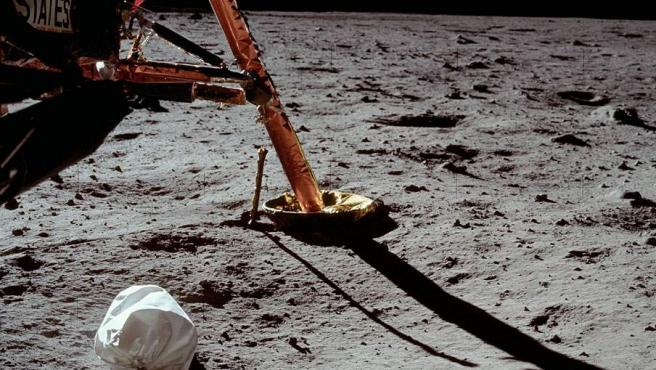

Viajar a la Luna de nuevo en 2022: la NASA y otras empresas privadas ya preparan a sus
astronautas
Diferentes proyectos y misiones de varios países ponen el objetivo en la Luna para este año.
20MINUTOS - 09.02.2022 - 09:20H

Esta fotografía, tomada por el astronauta Neil Armstrong, durante la
misión Apolo 11, fue la primera realizada por un ser humano en la Luna.
Que el hombre pise la Luna es uno de los anhelos que no se ha vuelto a repetir en la historia
desde las famosas imágenes de Neil Armstrong, aunque no son pocos los esfuerzos que se están
haciendo para lograr que otra tripulación tome tierra en el satélite.
Así, hay varias misiones y proyectos tanto de la NASA como de otras empresas privadas de varios
países del mundo que trabajan en misiones no tripuladas, que son la fase previa antes de mandar
a los astronautas a la Luna.
La NASA está trabajando en su misión Artemis I, la primera misión del megacohete SLS y la
cápsula Orion, en un viaje no tripulado de ida y vuelta al entorno lunar.
El lanzamiento estaba pensado para finales del año 2021, luego se atrasó a febrero de 2022 y,
finalmente, se ha aplazado hasta el mes de abril o mayo de este mismo año.
De este modo, los ingenieros continúan el trabajo asociado con las tareas de finalización y las
pruebas del conocido como sistema de terminación de vuelo antes del ensayo general, como recoge
Europa Press, con el objetivo de garantizar que el sistema integrado esté listo para lanzar de
forma segura la misión Artemis I.
El Falcon 9 de Space X fue lanzado en febrero de 2015, hace 7 años. Sin combustible para
regresar a la atmósfera de la Tierra y sin energía para escapar de la gravedad del sistema
Tierra-Luna, ha estado vagando por la órbita desde entonces.
Ahora, su trayectoria hará que impacte en la Luna el 4 de marzo. Como pesa unas 4 toneladas
métricas, debería impactar en la Luna a una velocidad de unos 2,58 km/s, convirtiéndose en el
primer artefacto espacial que golpea la Luna de forma no intencionada, como recoge Europa Press.